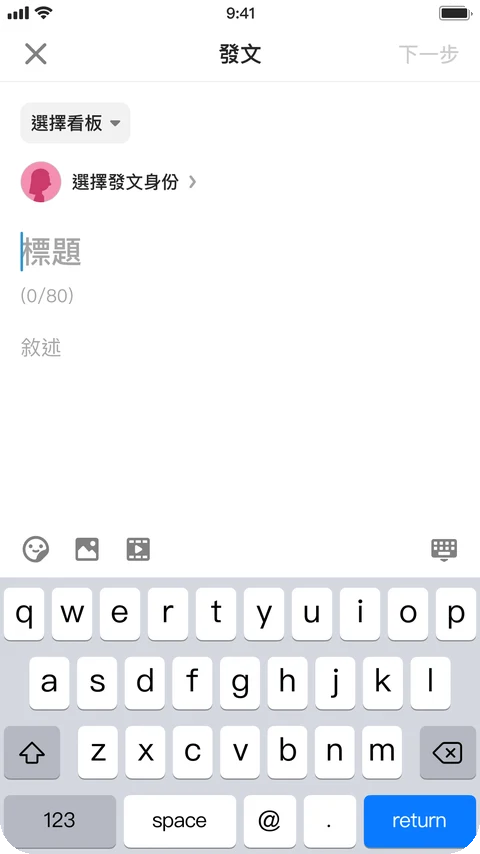
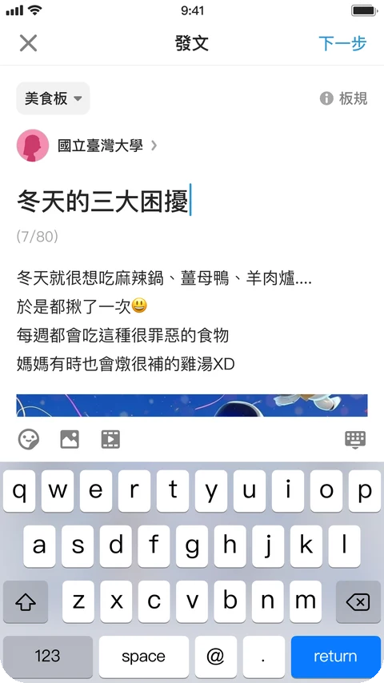
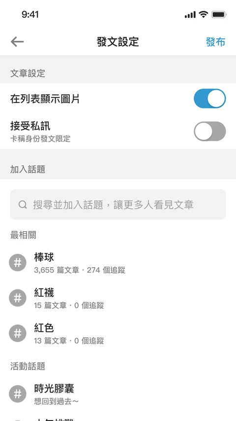

Selected Work

Dcard・全台最大匿名社群平台
優化發文流程，從「系統分類優先」改為「創作表達優先」
降低使用者開始創作前的操作與認知成本，讓有表達意願的使用者能更順暢地完成發文
01 問題洞察
STEP 1選擇發文類型 STEP 2選擇看板與發文身份 STEP 3撰寫文章 STEP 4發文設定並發布
Dcard 每日活躍人數 (DAU) 穩定成長，內容供給的轉換效率卻出現停滯。
為找出阻礙「讀者」轉化為「作者」的斷點，我結合漏斗分析 (Funnel Analysis) 與使用性測試 (Usability Test) 進行雙重診斷：
漏斗分析定位流失節點
拆解使用者從「點擊發文按鈕」到「點擊發布按鈕」的各步驟轉換率，發現多數高比例的跳出集中在剛進入發文流程的前置設定階段，包括：選擇發文類型、選擇看板、選擇發文身份。
使用性測試還原認知摩擦
既有流程要求先選擇文章類型、在數百個看板中選好分類，才能開始撰寫文章，這不僅讓使用者在打字前就陷入「不清楚發文類型差異、不確定發在哪個看板最合適」的選擇猶豫；且看板檢索機制會直接過濾無權限發布的看板，導致使用者搜尋不到預期看板而產生操作困惑，最終打斷創作心流、放棄發文。
改版前的發文流程



02 關鍵決策
先寫文後選分類，並消除檢索不到看板的疑慮
既有發文流程讓「系統分類」凌駕於使用者的表達意圖，因此我執行兩大核心改造：
01
重構決策順序
使用者點擊發文按鈕後即可開始撰寫文章，待內容成形後再選擇看板與發文身份。
02
消除看板檢索困惑
開放全站看板皆可被搜尋，並針對無權限發布之看板提供狀態提示與彈窗引導，解決在選擇過程中的不確定性。
03 關鍵成果
先寫文後選分類的新流程，讓每日平均發文人數成長 12%，且未增加發布阻力
核心供給指標
+12% 每日平均發文人數成長流程適應與穩定性
儘管調整核心操作順序，使用者仍能快速適應新版流程，且發布階段未出現異常流失，顯示「先寫文章、後選分類」的流程調整沒有增加完成發布的阻力。
04 策略延伸
從創作開始前的阻力，延伸到創作後的互動環境
本次專案解決了創作開始前的操作阻力，但創作者發布內容後，仍可能面臨負面留言與討論失序帶來的心理壓力。因此，下一階段將策略延伸至創作後的互動環境，透過留言管理機制，提升創作者對討論品質的掌控能力，支持持續創作。